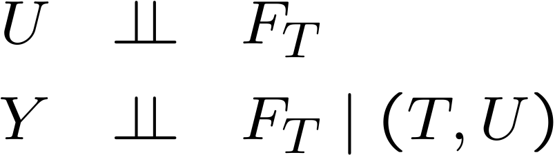
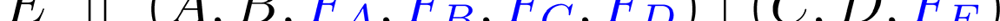
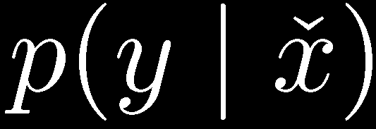
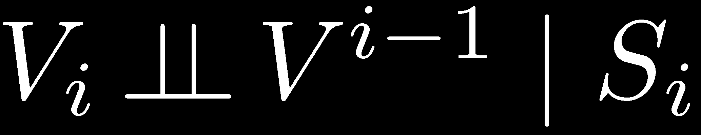

Statistical Causality
Philip Dawid
Statistical Laboratory
University of Cambridge
Statistical Causality
1. The Problems of Causal Inference
2. Formal Frameworks for Statistical Causality
3. Graphical Representations and Applications
4. Causal Discovery
3. Graphical Representations and
Applications
Graphical Representation
• Certain collections of CI properties can be
described and manipulated using a DAG
representation
– very far from complete
• Each CI property is represented by a
graphical separation property
– d-separation
– moralization

Moralization: 1

Moralization: 1

Moralization: 2


Moralization: 3
Extended Conditional Independence
Distribution of Y | T the same in observational and
experimental regimes:
Y | (F , T) does not depend on value of F
T
T
Can express and manipulate using notation and
theory of conditional independence:
(even though F is not random)
T

Augmented DAG
– with random variables and intervention variables
– probabilistic (not functional) relationships
F
T
Y
0/1/∅
T
0/1
T | (F = ∅) ∼ P
Y | T
T
T
Absence of arrow F → Y expresses
T

Sufficient Covariate
“(un)confounder”
U
F
T
Y
T
• Treatment assignment ignorable given U
– (generally) not marginally ignorable
• If U is observed, can fit model (e.g. regression)
for dependence of Y on (T,U)
– causally meaningful



Sufficient covariate
“(un)confounder”
Can estimate ACE:
(“back-door” formula)
Similarly, whole interventional distribution:


Non-confounding
U
b
a
F
T
Y
T
Treatment assignment ignorable given U
Ignorable marginally if either a or b is absent:
a
b
“randomization”
“irrelevance”
–then need not even observe U
Pearlian DAG
• Envisage intervention on every variable in the
system
• Augmented DAG model
– but with intervention indicators implicit
• Every arrow has a causal interpretation
Pearlian DAG
A
B
C
D
E
Intervention DAG
F
A
B
F
A
B
F
C
D
F
C
D
F
E
E



Intervention DAG
F
A
B
F
A
B
F
C
D
F
C
D
F
E
E
• e.g.,
• When E is not manipulated, its conditional
distribution, given its parents C, D is unaffected by
the values of A, B and by whether or not any of the
other variables is manipulated
– modular component


More complex DAGs
U
L
(influence diagram)
Y
By d-separation:
A
A
1
2
= treatment strategy
(would fail if e.g. U → Y)


Instrumental Variable
W
FX
X
Y
Linear model: E(Y | X=x, W, F = x ) = f(W) + β x
X
So E(Y | F = x) = E{f(W) | F = x} + β x
X
X
= α + β x
β is causal regression coefficient
– but not estimable from observational data:
E(Y | X=x) = E{f(W) | X = x} + β x


Instrumental Variable
W
FX
X
Y
Z
–so can now identify β
Discrete case
W
X, Y, Z binary
FX
X
Y
Z
Can develop inequalities for ACE
E(Y | F = 1) – E(Y | F = 0)
X
X
in terms of estimable quantities
Hypothesis Test
W
FX
X
Y
Z


Mendelian Randomisation
Does low serum cholesterol level
W
increase the risk of cancer?
FX
X
Y
X
= serum
cholesterol
Z
Y
= cancer
W
=
diet, smoking, hidden tumour,…
Z
= APOE
gene
(E2 allele induces particularly low serum
cholesterol)


Equivalence
W
W
F
F
X
X
Y
X
X
Y
causal?
U
Z
Z
Non-equivalence
W
W
F
F
X
X
Y
X
X
Y
causal?
U
Z
F
F
Z
Z
Z

Can we identify a causal effect from
observational data?
• Model with domain and (explicit or implicit)
intervention variables, specified ECI properties
– e.g. augmented DAG, Pearlian DAG
• Observed variables V, unobserved variables U
• Can identify observational distribution over V
• Want to answer causal query, e.g. p(y | F = x)
X
– write as
• When/how can this be done?


Example: “back-door formula”
Z
F
X
Y
X


Example: “back-door formula”
Z
Z
1
2
Z
Z
Z
3
4
5
F
X
Z
Y
X
6
Works for Z = (Z , Z ), and also for Z = (Z , Z )
3
4
4
5


Example: “front-door formula”
U
F
X
Z
Y
X


do-calculus

do-calculus
For a problem modelled by a Pearlian DAG, the
do-calculus is complete:
• We can tell whether a given causal effect is
computable (from the observational distribution)
• Any computable causal effect can be computed
by successive applications of rules 2 and 3
– together with probability calculus, and property
(delete dotted arrows)
• There exist algorithms to accomplish this
4. Causal Discovery
Probabilistic Causality
• Intuitive concepts of “cause”, “direct cause”,…
• Principle of the common cause:
“Variables are independent, given their
common causes”
• Assume causal DAG representation:
– direct causes of V are its DAG parents
– all “common causes” included
Probabilistic Causality
CAUSAL MARKOV CONDITION
– The causal DAG also represents the observational
conditional independence properties of the
variables
• WHEN??
• WHY??
• CAUSAL FAITHFULNESS CONDITION
– No extra conditional independencies
• WHY??
Causal Discovery
• An attempt to learn causal relationships from
observational data
• Assume there is an underlying causal DAG
(possibly including unobserved variables)
satisfying the (faithful) Causal Markov Condition
• Use data to search for a DAG representing the
observational independencies
model selection
• Give this a causal interpretation
Causal Discovery
Two main approaches:
• “Constraint-based”
– Qualitative
– Infer (patent or latent) conditional independencies
between variables
– Fit conforming DAG model(s)
• Statistical model selection
– Quantitative
– General approach, applied to DAG models
– Need not commit to one model (model uncertainty)
Constraint-Based Methods
(complete data)
• Identify/estimate conditional independencies
holding between observed variables
• Assume sought-for causal DAG does not
involve any variables other than those observed

Wermuth-Lauritzen algorithm
• Assume variables are “causally ordered” a
priori:
(V , V ,…, V ), s.t arrows can only go from lower to
1
2
N
higher
• For each i, identify (smallest) subset S of
i
Vi-1 := (V , V ,…, V ) such that
1
2
i-1
• Draw arrow from each member of S to V
i
i
SGS algorithm
(no prior ordering)
1. Start with complete undirected graph over VN
2. Remove edges V–W s.t., for some S,
3. Orient any V–Z–W as V→Z←W if:
– no edge V–W
– for each S ⊆ VN with Z ∈ S,
4. Repeat while still possible:
i. if V→Z –W but not V–W, orient as V→Z →W
ii. If VÃW and V–W, orient as V→W
Comments
•
Wermuth-Lauritzen algorithm
– always finds a valid DAG representation
– need not be faithful
– depends on prior ordering
•
SGS algorithm
– may not succeed if there is no faithful DAG
representation
– output may not be fully oriented
– computationally inefficient (too many tests)
– better variations: PC, PC*
Constraint-Based Methods
(incomplete data)
• Allow now for unobserved (latent) variables
• Can modify previous algorithms to work just
with conditional independencies between
observed variables
• But latent CI has other (quantitative)
implications too…


Discrete variables:
U
A
B
C
D
No CI properties between observables A, B, C, D.
But
– does not depend on a

Normal variables:
U
X
X
X
X
1
2
3
4
No CI properties between observables X , X , X , X .
1
2
3
4
But
Such properties form basis of TETRAD II program
Bayesian Model Selection
• Consider collection M = {M} of models
• Have prior distribution ( ) for parameter
M
M
M
of model M
• Based on data x, compute marginal likelihood for
each model M:
L = ∫ p(x | ) d
M
M
M
• Use as score for comparing models, or combine
with prior distribution {w } over models to get
M
posterior:
w* ∝ w L
M
M
M
Bayesian Model Selection
• Algebraically straightforward for discrete or
Gaussian DAG models, parametrised by
parent-child conditional distributions, having
conjugate priors (with local and global
independence)
Zoubin Ghahramani’s lectures
• Can arrange hyperparameters so that
indistinguishable (Markov equivalent) models
get same score
Mixed data
• Data from experimental and observational
regimes
• Model-selection approach:
– assume Pearlian DAG
– ignore local likelihood contribution when the
response variable is set
• Constraint-based approach?
– base on ECI properties, e.g.
A Parting Caution
• We have powerful statistical methods for
attacking causal problems
• But to apply them we have to make strong
assumptions (e.g. ECI assumptions, relating
distinct regimes)
• Important to consider and justify these in
context
– e.g., Mendelian randomisation
“NO CAUSES IN, NO CAUSES OUT”
Thank you!
Further Reading
• A. P. Dawid (2007). Fundamentals of Statistical Causality.
Research Report 279, Department of Statistical Science,
University College London. 94 pp.
http://www.ucl.ac.uk/Stats/research/reports/abs07.html#279
• R. E. Neapolitan (2003). Learning Bayesian Networks.
Prentice Hall, Upper Saddle River, New Jersey.
• J. Pearl (2009). Causality: Models, Reasoning and Inference
(second edition). Cambridge University Press.
• D. B. Rubin (1978). Bayesian inference for causal effects: the
role of randomization. Annals of Statistics 6, 34–68.
• P. Spirtes, C. Glymour, and R. Scheines (2000). Causation,
Prediction and Search (second edition). Springer-Verlag,
New York.
• P. Suppes (1970). A Probabilistic Theory of Causality. North
Holland, Amsterdam.
Document Outline